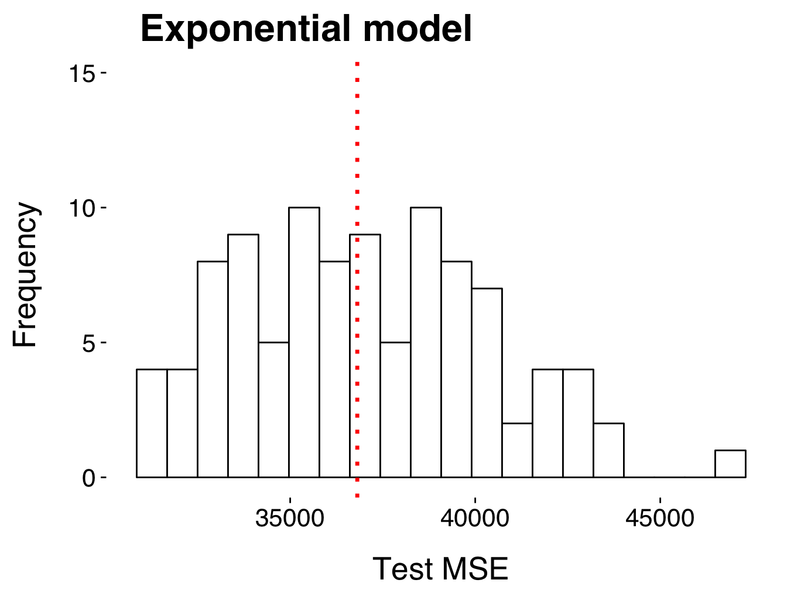
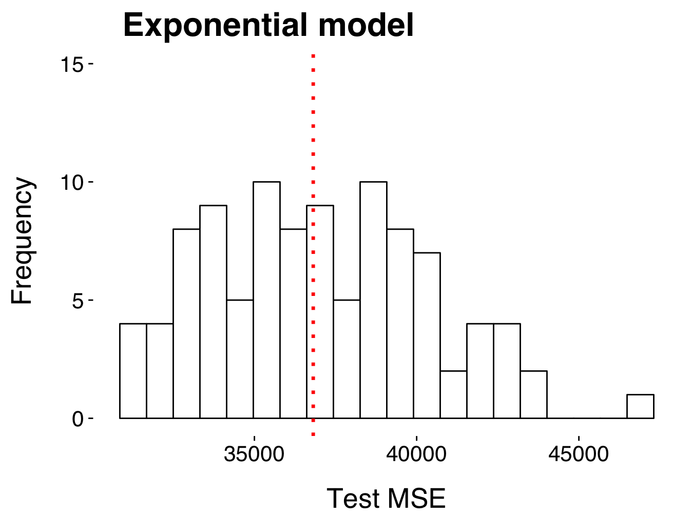

2 The Bias-Variance Tradeoff
2.1 The quality of fit in regression
Quality of fit means usually how well our model \(\hat{f}\) matches the experimental observations \(y\). Or more precisely, how much the predicted response value for a given observation \(\hat{f}(x_i) = \hat{y}_i\) is close to the observed response value \(y(x_i)\) for that observation \(x_i\). The \(SSE\) introduced in the previous section is not applicable because it is sample size dependent: as more observations we have, as higher the \(SSE\). Thus, we need to normalize for the number of observation \(n\). This gives us the most-commonly used measure for the quality of fit in regression analysis – the mean squared error \(MSE\):
\[MSE = \dfrac{1}{n} SSE = \dfrac{1}{n} \sum_{i = 1}^n \left( y(x_i) - \hat{f}(x_i) \right) ^ 2 = \dfrac{1}{n} \sum_{i = 1}^n \underbrace{ \left(\underbrace{\underbrace{y_i}_{\text{observed}} - \underbrace{\hat{y}_i}_{\text{predicted}}}_{\text{residual } r_i}\right)^2}_{\text{squared error}} \ , \] The MSE is the total mean error between our actual observations and model prediction. In the following section, we will see that there are different error sources that contribute to the total error (\(SSE\) and \(MSE\)).
2.2 Simulation study
We perform a simulation study with the four example models introduced in section 1.
\[\begin{align} \hat{f}_1 (x) &= \beta_0 + \beta_1 \ x &\text{Polynomial of degree 1 (linear model)} \\ \hat{f}_2 (x) &= \beta_0 + \beta_1 \ x + \beta_2 \ x^2 &\text{Polynomial of degree 2 (quadratic model)} \\ \hat{f}_3 (x) &= \beta_0 + \beta_1 \ x + \beta_2 \ x^2 + \ldots + \beta_{16} \ x^{15} & \text{Polynomial of degree 15} \\ \hat{f}_4 (x) &= \beta_0 + \beta_1 \ exp(x) & \text{Exponential model} \\ \end{align}\]All models share the same vector of independent variables \(x\). Note, that model \(\hat{f}_{3}\) can include models \(\hat{f}_{i<3}\) (and \(\hat{f}_{2}\) can include \(\hat{f}_{1}\)), while model \(\hat{f}_4\) belongs to a different category. We will see why this is important.
Assume you have a set of observations \(y\) given by some data-generating process for given values of \(x\). For instance, \(x\) might be a set of experimental conditions or a set of patient biomarkers. Then \(y\) might correspond to a fluorescence signal under the condition \(x\) or a disease outcome in the considered patient population. Note, that you do not observe the full population from which \(y\) is drawn but only a sample; performing another experiment under conditions \(x\) or collecting more patient samples for the considered patient population corresponds ideally to taking a new random sample from the same population. We try to design our experiments and studies such that we can assume that this is the case, otherwise we cannot use the discussed model selection criteria, because then we cannot assume that the observations come from the same data-generating process and then they can not be explained by the same model \(\hat{f}\).
We assume there is some real unknown model \(f\) that gives rise to our observations \(y\): \[ y = f(x) + \epsilon, \quad \epsilon \sim \mathcal{N}(0, \sigma^2) \]
We fit the four models to our available obseravtions \(y\). The summary statistics is shown in Table below.
get.statinfo <- function(model.list, model.titles, idx) {
tibble(
Model = model.titles[idx],
k = length(model.list[[idx]]$coefficients),
n = nobs(model.list[[idx]]),
df = df.residual(model.list[[idx]]), # n - k
SSE = round(sum(model.list[[idx]]$residuals ^ 2), 0),
MSE = round((sum(model.list[[idx]]$residuals ^ 2)) / nobs(model.list[[idx]]), 0)
)
}
statinfo <- purrr::map(
seq(4),
.f = function(.)
get.statinfo(model.list, model.titles, .)
) %>%
do.call("rbind", .)
knitr::kable(
statinfo,
caption = 'Summary statistics for fitting the four example models to the training data.',
booktabs = TRUE
)| Model | k | n | df | SSE | MSE |
|---|---|---|---|---|---|
| Linear model | 2 | 20 | 18 | 89005 | 4450 |
| Quadratic model | 3 | 20 | 17 | 26197 | 1310 |
| Polynomial of degree 15 | 16 | 20 | 4 | 8700 | 435 |
| Exponential model | 2 | 20 | 18 | 638936 | 31947 |
The \(MSE\) between model and training data is often called training \(MSE\). But to asses the model performance we are usually not interested in the training \(MSE\). Instead, we are interested in how well our model performs on new observations – the test \(MSE\). Let us compute the test \(MSE\) of the four example models for 100 new observations. Here, a new observation means a new sample drawn from the same population of observations as the training data set \(y\).
.compute.test.MSE <- function(model.list, seed, idx) {
set.seed(seed)
test.data <- tibble::tibble(x = seq(20),
y = jitter(2 * x ^ 2, amount = 60))
pred.y <- c(predict.lm(model.list[[idx]], test.data))
test.MSE <- round(mean((test.data$y - pred.y) ^ 2),0)
return(test.MSE)
}
# compute new test MSEs
n.models <- 4
n.obs <- 100
test.MSEs <- purrr::map(
seq(n.models),
.f = function(.) lapply(seq(n.obs),
function(x) .compute.test.MSE(model.list, x, .)) %>%
do.call("rbind", .)
)
# convert list to tibble
df.test.MSEs <- test.MSEs %>%
do.call("cbind", .) %>%
magrittr::set_colnames(model.titles) %>%
tibble::as.tibble(.) %>%
dplyr::mutate(Type = 'Test MSE')
# plot results
.plot.hist <- function(df, model.titles, idx.model) {
ggplot2::ggplot() +
geom_histogram(
aes(x = df[[idx.model]]), color = "black", fill = "white", bins = 20) +
theme_book() +
labs(title = model.titles[idx.model], x = df$Type, y = "Frequency") +
geom_vline(
xintercept = median(df[[idx.model]]), lty = 3, color = "red", lwd = 1.2) +
ylim(0, 15)
}
hist.MSEs <- purrr::map(
seq(n.models),
.f = function(.).plot.hist(df.test.MSEs, model.titles, .)
)
# show plots
invisible(lapply(hist.MSEs, function(x) methods::show(x)))## Warning: Removed 1 rows containing missing values (geom_bar). 

Figure 2.1: Histogram of test MSEs computed on 100 new observations.
Now, let us compute the training \(MSE\) for 100 new observations and compare it to the test \(MSE\).
.fit.new.obs <- function(model.list, seed){
set.seed(seed)
test.data <- tibble::tibble(x = seq(20), y = jitter(2 * x ^ 2, amount = 60))
new.fit <- purrr::map(
seq(length(model.list)),
.f = function(.) lm(formula(model.list[[.]]), test.data)
)
return(new.fit)
}
.get.MSE <- function(list.of.fits, idx.fit, idx.model){
MSE =
round((sum(list.of.fits[[idx.fit]][[idx.model]]$residuals ^ 2)) /
nobs(list.of.fits[[idx.fit]][[idx.model]]), 0)
return(MSE)
}
# fit models to new obserations and store in list
n.obs <- 100 # we fit the four models
n.models <- 4
new.fits <- purrr::map(
seq(n.obs),
.f = function(.) .fit.new.obs(model.list, .)
)
# get new training MSEs
training.MSEs <- purrr::map(
seq(n.models),
.f = function(.) lapply(seq(n.obs),
function(x) .get.MSE(new.fits, x, .)) %>%
do.call("rbind", .)
)
# convert list to tibble and merge with df.test.MSEs
df.MSEs <- training.MSEs %>%
do.call("cbind", .) %>%
magrittr::set_colnames(model.titles) %>%
as.tibble(.) %>%
dplyr::mutate(Type = 'training MSE') %>%
dplyr::bind_rows(df.test.MSEs) %>%
tidyr::gather(Model, MSE, -Type)
# define order of models (how they should appear in plot)
df.MSEs$Model <- factor(df.MSEs$Model,
levels=c(model.titles[length(model.titles)], model.titles[1:length(model.titles)-1]))
# plot all training MSEs and test MSEs
ggplot2::ggplot(df.MSEs,
aes(x = factor(Model), y = MSE)) +
scale_shape_discrete(solid=F) +
geom_point(aes(color = Type),
size = 3, stroke = 1, alpha = 0.05) +
geom_boxplot(aes(color=Type), width = 0.5) +
labs(x = 'Model', y = 'MSE', title = '') +
background_grid(major= "y", colour.major="grey40") +
scale_y_log10(
breaks = scales::trans_breaks("log10", function(x) 10^x),
labels = scales::trans_format("log10", scales::math_format(10^.x))) +
annotation_logticks(sides = 'lr') +
theme_book() +
panel_border() +
scale_color_brewer(palette = "Set1") +
scale_x_discrete(labels = c("Exp.", "Linear", "Quadr.", "Polyn. 15"))Figure 2.2: Comparison of training and test MSEs computed on 100 new data sets.
The polynomial of degree 15 has the best training \(MSE\) but the worse test \(MSE\). This behavior is often called overfitting. In the next section we will show that this results from high model variance (error due to estimation) and low bias (error due to approximation). The linear model performs bad on both data sets. Note that the \(MSE\) of the linear model does not change as as much as for \(\hat{f}_3\) – this indicates that the model variance of \(\hat{f}_1\) is rather low and that the high \(MSE\) results from high bias. The quadratic model performs well on both data sets suggesting a low model variance and a low bias. And indeed, this model was used to generate the data for this example.
2.3 Error decomposition
[work in progress]
Assume we know the real model \(f\) that gives rise to some real observations \(y\) for values \(x\) described by \(y = f(x) + \epsilon\), with random noise \(\epsilon \sim \mathcal{N}(0, \sigma^2)\).
We are interested in the quality of fit for a given model \(\hat{f}\). It can be shown, that the expected test \(MSE\) for \(\hat{f}(x_i)\) can always be decomposed into the sum of the following three components: \[ E \left( y(x_i) - \hat{f}(x_i) \right)^2 = \mathrm{Var}(\hat{f}(x_i)) + \left( \mathrm{Bias} (\hat{f}(x_i)) \right)^2 + \mathrm{Var}(\epsilon)\]
- Variance of the fitted model: \(\mathrm{Var}(\hat{f}(x_i)) = E(\hat{f}(x_i)^2) - E(\hat{f}(x_i))^2\)
- The variance of \(\hat{f}(x_i)\) refers to the amount by which model \(\hat{f}\) would change, if we estimated it using a different training data set (changes in estimated parameters); in general, more flexible models show higher variance than less flexible models. This error term is also called error due to estimation.
Figure 2.3: Visualization of model variance: The example models were fitted to four different testing data sets.
- Squared bias of the fitted model: \(\left( \mathrm{Bias} (\hat{f}(x_i)) \right)^2 = \left( E\left(\hat{f}(x_i)\right) - f(x_i) \right)^2\)
- The squared bias of \(\hat{f}(x_i)\) is also called error due to approximation. More flexible models result in lower bias (but higher variance), while less flexible models result in high bias (and lower variance).
- Variance due to measurement noise: \(\mathrm{Var}(\epsilon) = \sigma^2\)
- The variance of the error terms, which is irreducible.n